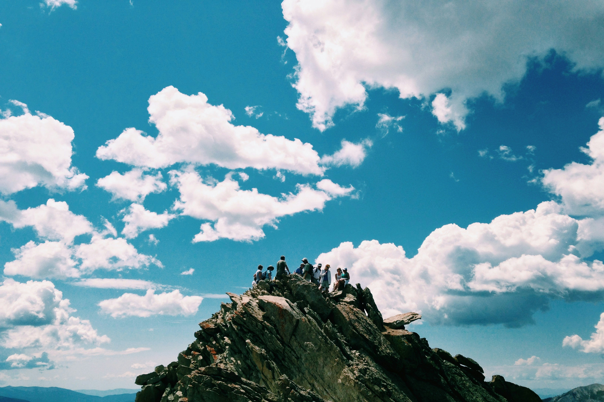
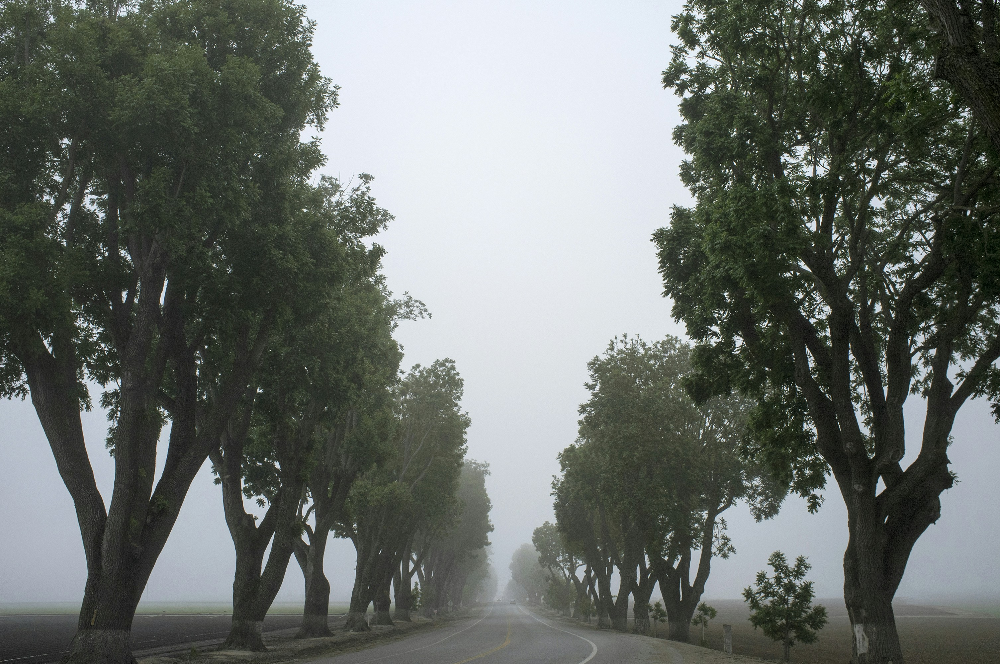
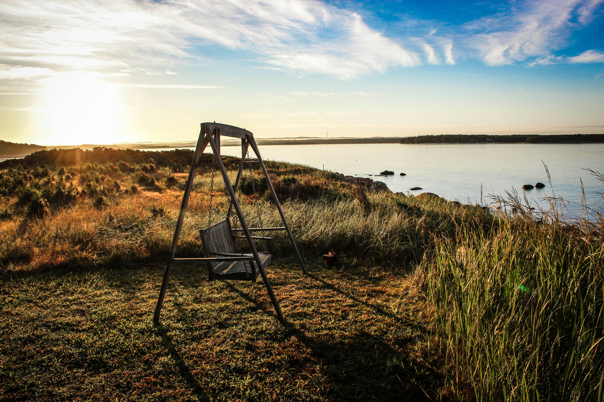
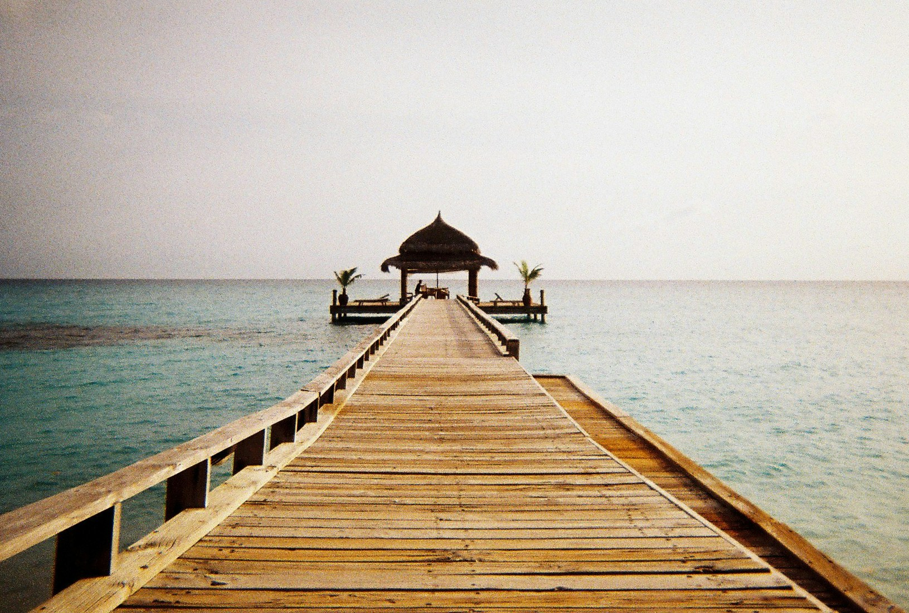
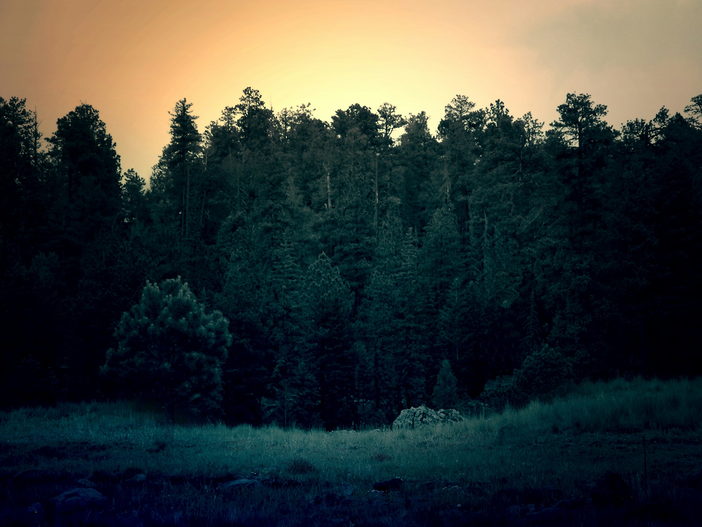
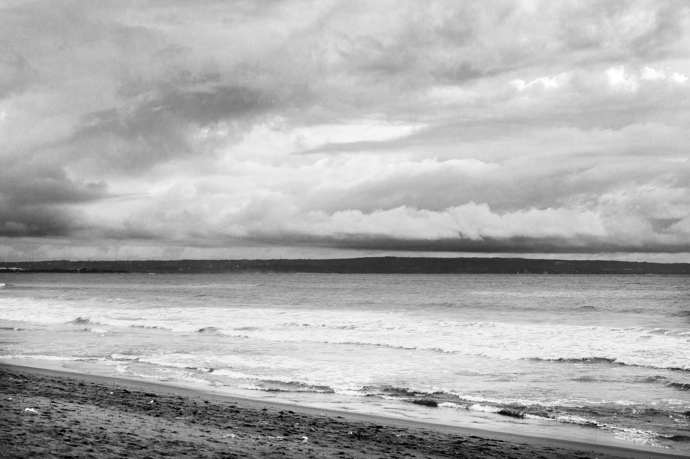

FIELD NOTES
A little closer to the outdoors.
An editorial collection built to test a practical question: how much image data does this layout need? These are two versions of a page we control, with credited photographs and actual encoded outputs.

Nicholas Swanson / Unsplash

Dorothy Lin / Unsplash

Jon Eckert / Unsplash

May Pamintuan / Unsplash

Julie Geiger / Unsplash

Ireneuilia / Unsplash
Inspect this load
Measurements below come from this browser's Resource Timing API. All six images load eagerly. Use a fresh URL query or the local no-store server for a cold-load comparison.
Wait for images to load, then inspect.